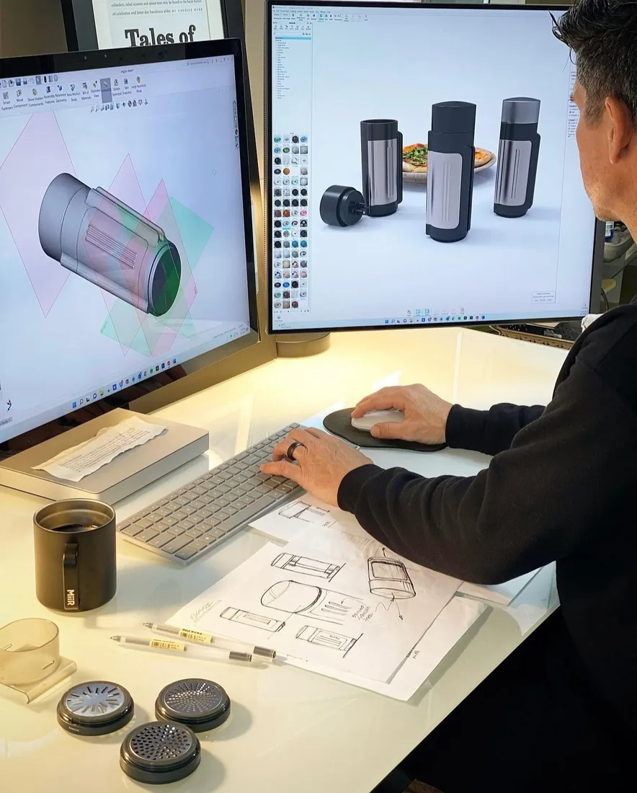

The question is no longer whether teams use it. The question is where it changes the work.
FMCG / AI implementation
AI will not fix FMCG by magic. It will fix the work that repeats every week.
The useful starting point is smaller than most AI decks suggest: buyer packs, promo reviews, claim checks, demand exceptions, research summaries and internal support work that already moves through the business every week.
Built for FMCG leaders deciding where AI should enter real workflows in 2026, how to avoid wasteful model use, and what has to change when pilots become normal operations.
The near-term prize sits in decisions that come back every week: account, promo, pack, stock and insight.
Long context, agents and tools can turn a simple question into an expensive workflow.
01
Business thesis
The first return usually appears in the weekly work nobody has time to do properly.
FMCG companies run on repeated micro-decisions: what moved in sell-out, why a promo missed plan, which claim is safe for pack, which SKU has demand risk, what the buyer should hear next Tuesday. AI fits when the work is document-heavy, time-sensitive and stuck between commercial, category, supply and legal.
"88 percent report regular AI use in at least one business function."
McKinsey, State of AI 2025"Initially, companies will generate more than 90% of the value from AI by reshaping processes."
BCG, consumer products, 2025"76% surveyed executives work at companies that are increasing investment in AI."
Deloitte, Consumer Products Outlook 2025
Adoption curve
Source: McKinsey, 2025
Most companies are using AI. Far fewer have changed the operating rhythm.
Consumer products
Source: Deloitte, 2025
The budget is moving. The controls have to catch up.
02
Opportunity map
Do not sell every department the same AI story.
A KAM preparing for Carrefour, a category lead reading reviews, a supply planner explaining a service issue and a legal reviewer checking claims do not need the same workflow. The roadmap has to start with the job, the data and the approval point.

Campaign work without the drag
Turn a rough brief, approved claims and past learnings into channel drafts the brand team can actually review.
First flow to test: brief to retail-media and ecommerce variants.Better Monday buyer prep
Pull sell-in, sell-out, promo notes and open risks into a short account narrative before the meeting starts.
First flow to test: weekly buyer pack from account data and field notes.Less time hunting for the signal
Compress reviews, survey verbatims, competitor moves and category news into a digest with sources still visible.
First flow to test: weekly signal digest for one priority category.Concept work before the expensive work
Stress-test the concept, claims, pack copy and likely objections before the team spends real development time.
First flow to test: concept brief to claims, risks and test plan.Faster explanations for exceptions
Summarize what changed, likely causes, affected customers and the next action when service or demand breaks pattern.
First flow to test: demand exception to action memo.Support work with clearer hand-offs
Draft budget commentary, contract summaries, policy answers and compliance checks for the owner to approve.
First flow to test: document review with human sign-off.
03
Easy optimization
Start where the work is frequent, messy and still reviewed by a person.
The safest first moves are not glamorous. They are the jobs where someone already checks the output before it reaches a customer, a pack, a forecast or a price file.
01
From meeting notes to action follow-up
Turns customer, agency and internal meeting notes into owners, deadlines, risks and unresolved questions.
02
From dashboard movement to the short story
Reads sell-out, share or service movements and drafts the weekly explanation a manager can challenge.
03
From product data to retailer-ready content
Drafts product copy, PDP claims, image briefs and ecommerce FAQ answers from approved master data.
04
From open text to usable insight
Groups reviews, complaints and qualitative research into tensions, claims, unmet needs and consumer language.
05
From policy to guided answer
Helps employees navigate HR, procurement, brand, compliance and travel rules without asking support teams every time.

04
Token economics
In 2026, bad answers are only half the risk. The other half is uncontrolled consumption.
Last year, many teams treated AI like a chat box. Now the same request can trigger long context, reasoning, file analysis, search and tool calls. Two users can ask the same business question and create very different costs.
Every file can become part of the bill.
Teams attach full decks, raw exports and historic chats because the model can take them. That does not mean it should.
Tools multiply the hidden work.
Search, code execution, browsing and data retrieval can create hidden token and usage costs across turns.
Hard tasks pull the expensive model.
Without model rules, teams use frontier reasoning models for jobs a smaller model could handle well enough.
One busy team can crowd out another.
Rate limits and usage limits often sit at organization, project or model-family level, not at the individual workflow level.
"Rate limits can be hit across any of the options depending on what occurs first."
OpenAI API rate limits"Rate limits are tied to the project's usage tier."
Google Gemini API rate limits"Sizing your Priority Tier capacity to align with your actual traffic patterns helps."
Anthropic service tiers
Current frontier model reality
Long context is useful. It is also easy to overuse.
GPT-5.5
$5 input / $30 output per 1M tokens. Long prompts above 272k are priced higher.
Claude Opus 4.8
$5 input / $25 output per 1M tokens, with Priority Tier capacity controls.
Gemini 3 Pro Preview
Supports search grounding, function calling, code execution, caching and file search.
05
Model evolution
The real model question is no longer "which chatbot?" It is "which job goes where?"
The practical shift is a portfolio problem. Use long-context models when the document set is genuinely large, reasoning models for trade-offs, smaller models for routine transformation, and cached or batch flows when the work is predictable.
Transform and format
Summaries, tone variants, translations, meeting actions and structured extraction.
Use smaller, cheaper models with tight prompts.Read and compare
Multiple documents, policies, research reports, retailer guidelines and historic performance.
Use retrieval, context caps and source citations.Reason and challenge
Innovation choices, promo risk, pricing scenarios and negotiation preparation.
Use reasoning models with human decision owners.Run repeatedly
Weekly reports, customer packs, claims checks, service exceptions and support answers.
Use cached context, batch jobs and observability.As of June 2026, OpenAI positions GPT-5.5 as its newest frontier model, Anthropic lists Claude Opus 4.8 as its most capable generally available model, and Google highlights Gemini 3 Pro Preview as its most intelligent Gemini model. The management implication is simple: model selection is now a P&L control, not an IT preference.
06
Successful management
A good AI program should feel closer to commercial operations than to a lab.
FMCG companies do not need another shelf of disconnected pilots. They need a small delivery team, functional owners, finance visibility and a hard rule: every flow must have a business owner, a usage budget and a decision it improves.
07
90-day plan
The first 90 days should prove three things: habit, economics and control.
Pick the flows
Map 20 candidate processes, score frequency, effort, risk and data readiness, then select three.
Build the controlled version
Design templates, context caps, source rules, model routing and human approval moments.
Run with real teams
Track time saved, rework, token cost, error types, adoption and decision quality.
Scale or stop
Expand flows that get repeated use and visible economics. Kill the ones that only look good in demos.
Source base
Sources used for this business case
McKinsey, The State of AI 2025
McKinsey, digital and AI value in CPG
BCG, The AI-First Consumer Products Company
Deloitte, 2025 Consumer Products Industry Outlook
OpenAI, API rate limits and usage tiers
OpenAI, GPT-5.5 model docs
OpenAI, Introducing GPT-5.5
Google, Gemini API rate limits
Google, Gemini models
Anthropic, models overview
Anthropic, service tiers
Apply the method
Need to prioritize AI flows inside an FMCG business?
Start with the workflows that repeat every week and already have accountable owners.